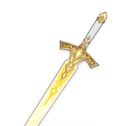

Fontaine · Relics & Equipment
Sword of Narzissenkreuz
The Narzissenkreuz story begins with a wooden quest prop; Rowboat’s Wake later grants a distinct four-star sword that preserves its name.

The Holy Blade Begins as a Wooden Prop
In Ann of the Narzissenkreuz, the Holy Blade of Narzissenkreuz belongs first to a children’s adventure story about Ann and the Narzissenkreuz Adventure Team. The quest later identifies the physical object behind the story as a wooden sword found at the Narzissenkreuz Institute. It is a quest item and symbol in the group’s retelling, not a historic enchanted weapon forged from four people’s souls.
The broader Narzissenkreuz quests give the blade a role in the Ordo’s ritual language: Caterpillar explains that it can be an object that holds significance, and Jakob speaks of using it in his attempt to continue Rene’s plan. Those statements belong to characters’ competing interpretations and plans; they do not support the previous claim that the Ordo’s four founders created the original wooden sword.
From Quest Item to Usable Sword
Across In the Wake of Narcissus, the Holy Blade’s meaning changes as Ann, Caterpillar, Seymour, and the Traveler revisit its story and the Ordo’s history. During the later quest sequence, it is used in the struggle against the Ordo’s plan. Completing Rowboat’s Wake grants the Traveler a separate, usable four-star weapon called Sword of Narzissenkreuz, replacing the quest-only item.
The weapon’s Hero’s Blade passive can release a Pneuma- or Ousia-aligned energy blast when a character without Arkhe lands a Normal, Charged, or Plunging Attack. Its current alignment determines the blast; the weapon does not grant its wielder unrestricted control over Arkhe. The player can change the weapon’s alignment at the Little Fountain in Annapausis, while Surging Sacred Chalices are used for refinement.
What the Sword Represents
The quest deliberately lets a humble wooden toy carry different meanings: a children’s role-play prop, a symbol invoked by the Narzissenkreuz Ordo, and a focal point for Ann’s memories. This is why the blade’s story matters even though its first physical form is ordinary wood. The game leaves room for the characters’ symbolic understanding without requiring an invented origin story for the object.
This is an original CoreGG reading guide, not an official HoYoverse article or a reproduction of the game text. Source links below identify the records used so you can check the original context.
Sources & references
Check these sources for the original game text and reference trail.